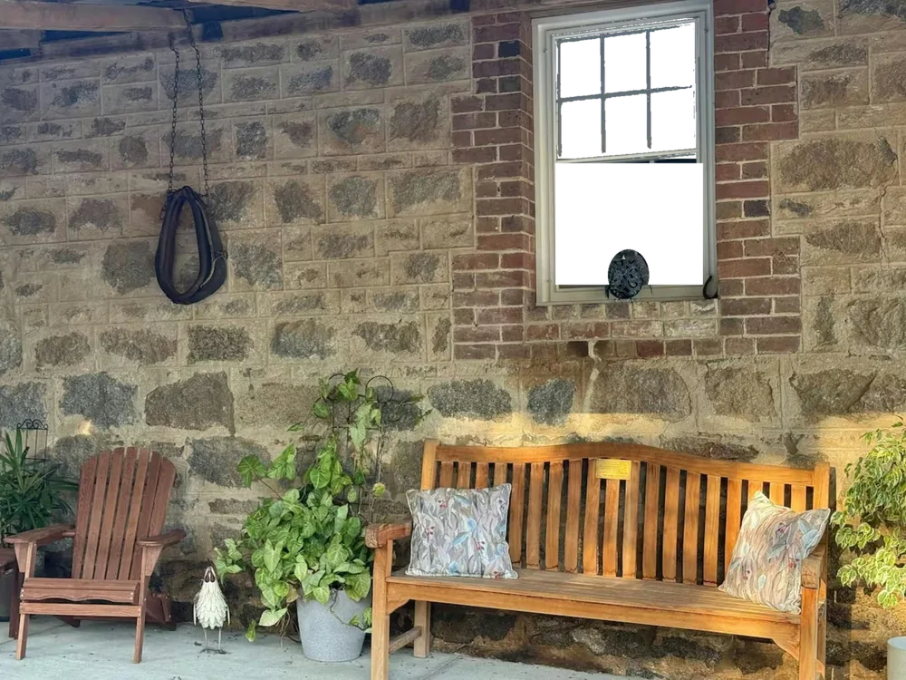
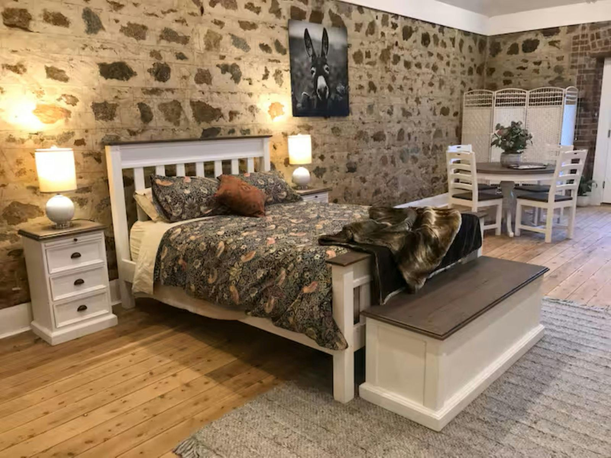
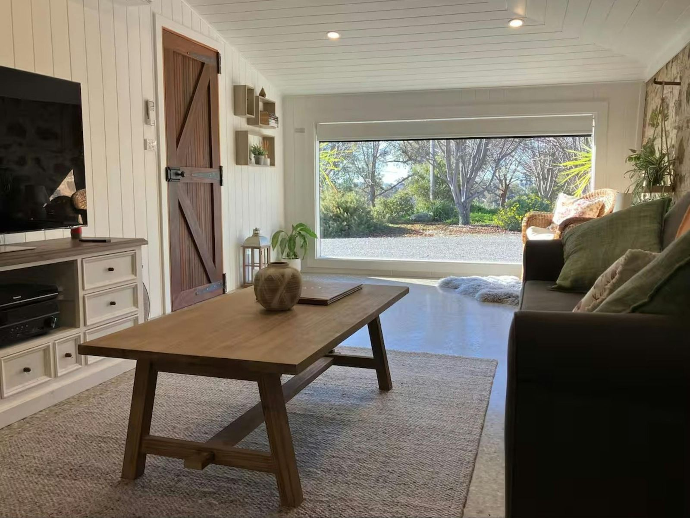
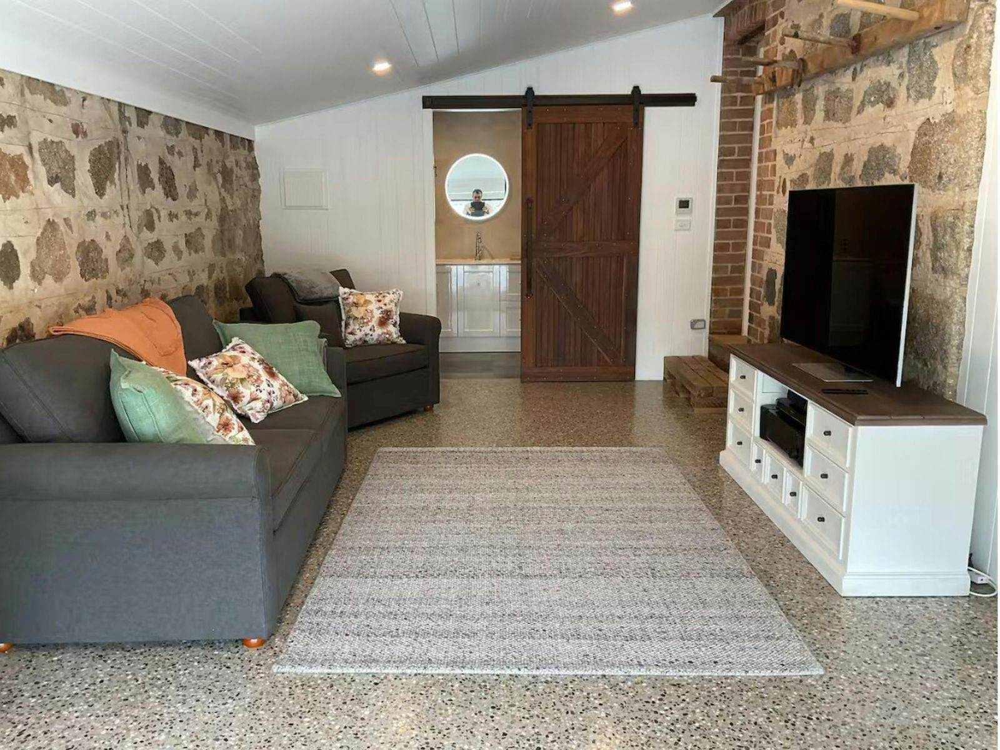
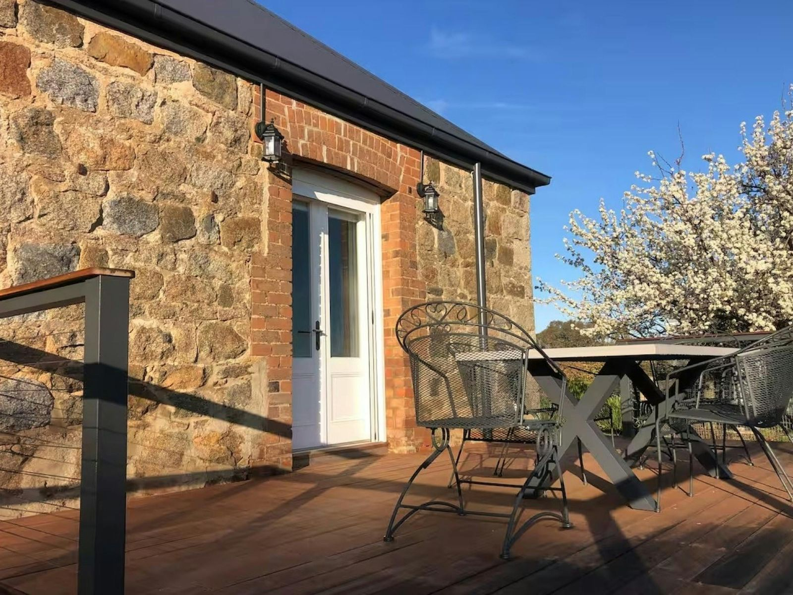
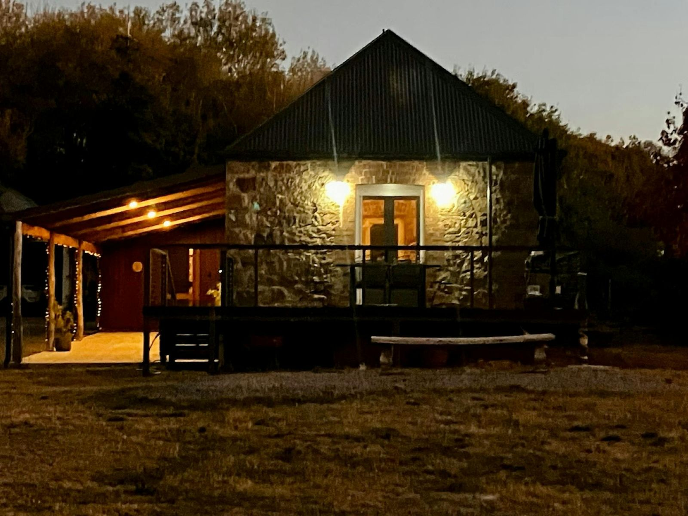
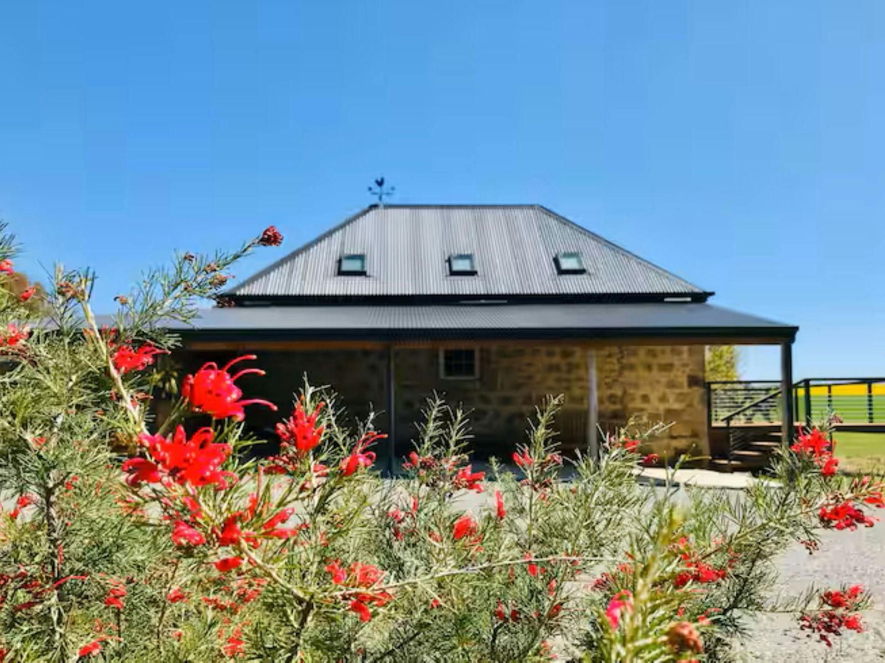
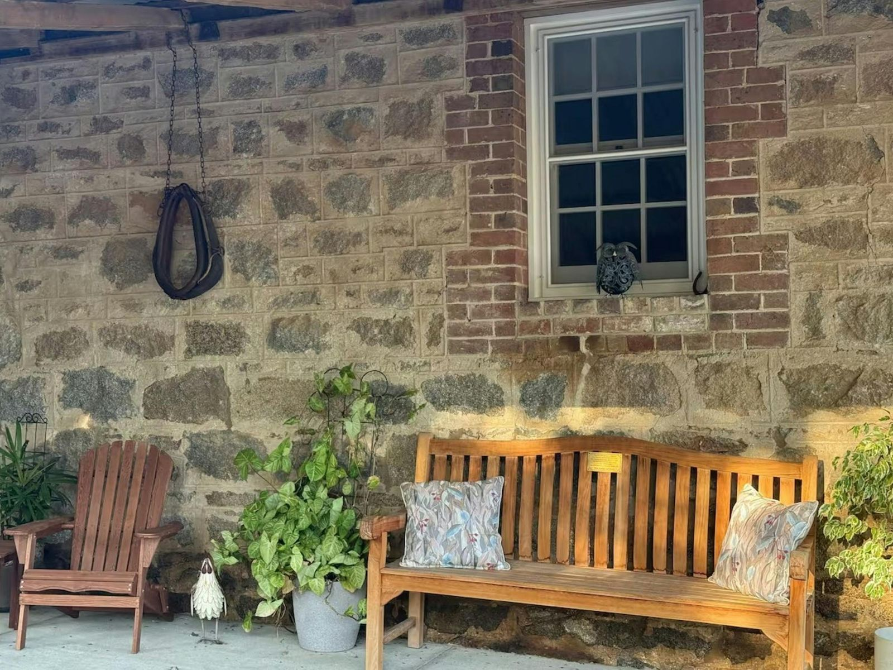

Kingsvale, near Harden, in the Hilltops of NSW
The Old Stone Shed
A granite stable from the 1880s, made over into a farm stay. It looks out over wheat, canola and merino sheep, ten minutes from Murrumburrah.
Out the window, the paddocks.
The deck faces north over the fields. The noisiest thing out here is the birds.
The shed
The walls are the stable's own granite, built in the 1880s. Inside it's been made over with a queen bed, a kitchenette and a dining table for slow country breakfasts.
The main room opens straight onto the deck.
- Bed
- One queen bed, under the stone wall.
- Eat
- A kitchenette and dining area inside. A barbecue and outdoor dining table outside.
- Deck
- Raised and facing north, over wheat, canola and grazing merinos.
- Wifi
- Free wifi.
- Horses
- Plenty of room for horse floats and trailers.
- Access
- Disabled access available. Ask about the details before you book.
- Stay
- Two nights minimum.




Sundown on the deck
When the day goes, take a glass of local wine out to the deck and watch the sun drop over the paddocks. After dark the lamps come on by the door.


A working farm
Walk the quiet country roads, watch the native birds, and see how a farm runs through the year.
In late September they posted that the canola had passed its peak in the warmer weather and the crop was moving on to pod fill.
From a guest
"Such a lovely surprise to find such stunning and charming accommodation, in a tranquil and picturesque setting."
Mary, August 2026, shared on The Old Stone Shed's Instagram
Getting here
| By car from Kingsvale, roughly | Distance |
|---|---|
| Harden | 17 km |
| Young | 17 km |
| Yass | 81 km |
| Canberra | 143 km |
The shed is about ten minutes from Murrumburrah. Road distances on OpenStreetMap from Kingsvale, rounded; the shed's own gate may be a little closer or further.
Check dates
From A$250a night, for the whole shed. Rates run A$250 to A$300 a night, two nights minimum.
Good to know
- Two nights minimum.
- Room for a horse float or trailer.
- Free wifi.
- Disabled access available. Ask for details.

Keep a spot on the bench.
Kingsvale, in the Hilltops of NSW. Two nights minimum.